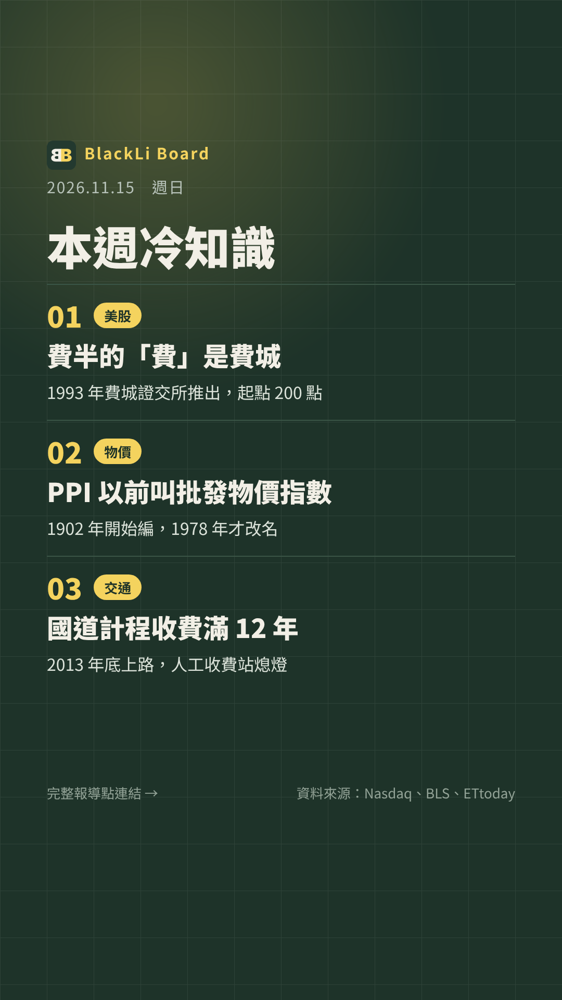

一張圖看懂這週

1. 「費半」的「費」是什麼意思？
新聞常說的「費半」，全名是費城半導體指數（PHLX Semiconductor Sector，代號 SOX）。「費」指的是美國費城：這個指數 1993 年由費城證券交易所推出，1993 年 12 月 1 日從 200 點起算。後來費城證交所被那斯達克（Nasdaq）收購，指數改由那斯達克編製，但「費城」這個名字一直留著。現在它追蹤 30 檔半導體相關股票，是台股投資人每天早上必看的數字之一。
2. PPI 以前為什麼叫「批發物價指數」？
這週美國公布的生產者物價指數（PPI），其實是美國勞工統計局（BLS）歷史最久的物價統計之一。依 BLS 說明，它從 1902 年開始編製時叫做「批發物價指數」（Wholesale Price Index），一直到 1978 年才改名為 PPI。BLS 特別說明，改名並沒有改變計算方法。換句話說，它量的一直是生產者賣出東西時拿到的價格，範圍從原料、半成品到成品，名字只是更貼近內容。
3. 台指期為什麼晚上也能交易？
新聞說「台指期夜盤驚驚漲」，夜盤正式名稱是期交所的「盤後交易時段」，2017 年 5 月 15 日才上線，到現在不到 10 年。設計的目的，是讓投資人在美股、歐股交易時，也能用台指期提前反應或避險，不用等到隔天早上開盤。所以美國晚上有大消息時，夜盤常常是台股隔天走勢的「預告片」。
4. 國道是哪一年改成「走多少、付多少」？
這週有新聞談國道通行費多年未調整。現在的計程收費，是 2013 年 12 月 30 日凌晨全面上路的，當時全台人工收費站同步熄燈，結束了 39 年的計次收費。先試辦 3 天免費，2014 年 1 月 2 日正式收費。小客車每天前 20 公里免費，20～200 公里每公里 1.2 元，超過 200 公里打 75 折。
5. 產假「14 週」這個數字從哪裡來？
這週專欄談到產假將從 8 週變 14 週。14 週其實是國際勞工組織（ILO）2000 年通過的第 183 號《保護生育公約》訂下的最低標準：產假至少 14 週，其中產後 6 週原則上是強制休假；如果產假津貼是依薪水計算，至少要有原本收入的三分之二。台灣勞基法第 50 條規定的產假則是 8 週。
你每天看到的新聞名詞裡，有沒有哪一個一直用、卻從沒想過它為什麼叫這個名字？下次遇到，查一下由來，說不定會記得更牢。
資料來源：Nasdaq Global Indexes：PHLX Semiconductor、Wikipedia：PHLX Semiconductor Sector、美國勞工統計局 PPI 問答、今周刊：夜盤交易量屢創新高、ETtoday：國道計程收費上路、ILO 第 183 號公約全文、勞動部：產假工資說明